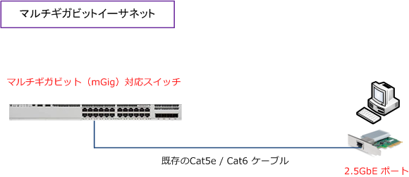

Multi-gigabit Ethernet
マルチギガビットイーサネットとは
マルチギガビットイーサネットとは、2.5Gbps/5Gbpsの通信速度を持つネットワーク規格のことです。 マルチギガビットイーサネットの需要の背景として、Wi-Fiで6.9Gbpsの通信速度を実現した802.11ac、 9.6Gbpsの通信速度を実現した802.11axが登場したことで、既存の有線LANで主流な1000Base-Tより 高速通信を実現したことで、有線LANの区間でボトルネックとなるケースがでてきた事が挙げられます。
1000Base-Tよりも高速な10Gbase-Tは対応機器が高価であることから、1000Base-Tと10Gbase-Tの 中間的な通信速度を実現し、普及率の高いCat5eケーブルを使用できる規格として、2.5Gbps/5Gbpsの 通信速度を実現したマルチギガビットイーサネットが標準化されることになりました。 ※ マルチギガビットイーサネットは、ベンダー独自の名称としてmGigやNBASE-Tとも呼ばれています。

マルチギガビットイーサネット - 規格
マルチギガビットイーサネットは、2016年9月にIEEE802.3bzとして2.5GBASE-Tと5GBASE-Tの名称で 標準化されており、Cat5eまたはCat6のLANケーブルを利用し家庭内LANや企業LANで使用されています。 なお、2.5GBASE-T/5GBASE-TではPoE（IEEE802.3bt）にも対応しています。マルチギガビットイーサ ネットの他の規格として、車載Ethernet規格とよばれるIEEE802.3chが2020年6月に標準化されています。
| 規格 | 名称 | 距離 | 用途 |
|---|---|---|---|
| IEEE802.3bz | 2.5GBASE-T | 100m | ツイストペア |
| IEEE802.3bz | 5GBASE-T | 100m | ツイストペア |
| IEEE802.3ch | 2.5GBASE-T1 | 15m | 車載用ツイストペア |
| IEEE802.3ch | 5GBASE-T1 | 15m | 車載用ツイストペア |